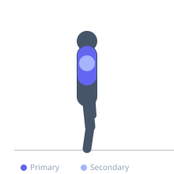

Exercise guide / Doorway Chest Stretch
Doorway Chest Stretch
The doorway chest stretch uses a door frame to passively stretch the pectoral muscles and anterior deltoids into horizontal abduction, which is the antagonist movement to pushing and pressing. Regular stretching of the anterior chest is associated with improved shoulder posture, reduced risk of rounded shoulders, and better overhead shoulder mobility. The arm position can be adjusted to target the clavicular or sternal head of the pectoralis major.
Primary muscles
pectoralis major sternal
pectoralis major clavicular
Secondary muscles
deltoid anterior
Stabilizers
trapezius middle
Equipment
No Equipment (Bodyweight)


Starting position
- Stand in an open doorway. Raise both arms to form a 90-degree angle at the elbow with forearms resting on the door frame.
Setup
- Find a doorway wide enough to place forearms on each side of the frame. No equipment needed.
Steps
- Step 1: Stand in the center of a doorway with one foot slightly forward for stability.
- Step 2: Place both forearms on the door frame at approximately shoulder height (elbows at 90 degrees).
- Step 3: Lean gently forward through the doorway, allowing the chest to open and shoulders to rotate back.
- Step 4: When a stretch is felt across the chest and front of the shoulders, hold the position.
- Step 5: Hold 30–60 seconds. Raise forearms slightly higher to stretch the clavicular head, lower to target the sternal head.
Coaching cues
- Lead the chest through the door, not the head
- Squeeze the shoulder blades together gently during the stretch
- Breathe wide — expand the chest on each inhale
Breathing
- Breathe normally and slowly. Each exhale allows the chest to open slightly more.
Range of motion
- Lean forward until a comfortable pectoral stretch is felt. No need to overreach.
Tempo
- Hold 30–60 seconds. 2–3 rounds at different arm heights.
Common mistakes
- Leaning forward excessively with the lower back arching rather than the chest opening
- Placing the arms too high, which shifts the stretch to the shoulder rather than the pec
- Holding the breath and creating tension in the shoulders and neck
Safety
- If shoulder pain is experienced — especially at the front of the shoulder — reduce the range of forward lean
- Those with anterior shoulder instability should use caution with this stretch
Training
- mobility: 2–3 reps
- mobility: 1–2 sets
- Rest: {'mobility': 10}